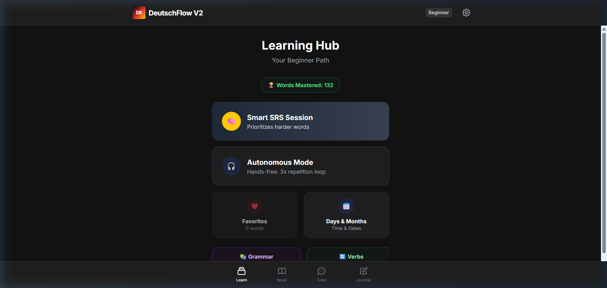
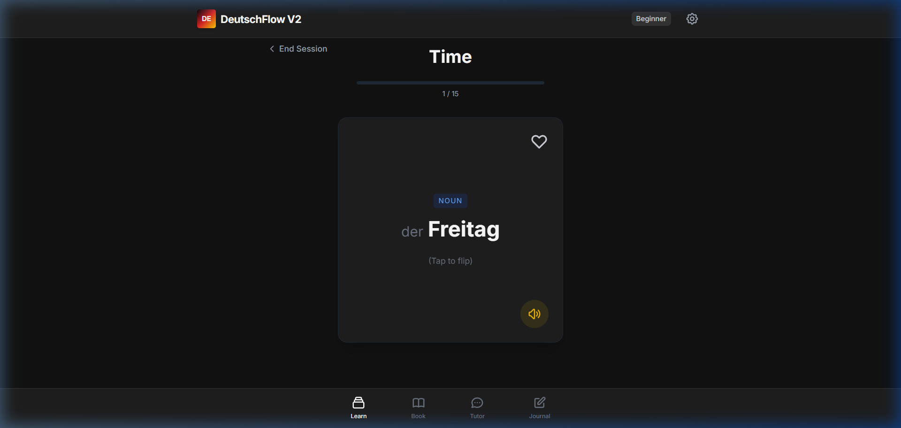

DeutschFlow
DeutschFlow is an immersive language-learning platform designed specifically to help users master German vocabulary efficiently.
Built with a focus on retention and rapid familiarization, DeutschFlow introduces Smart SRS (Spaced Repetition System) Sessions and topic-specific modules to create an engaging experience for language learners.
Screenshots


Features
- Smart SRS Session: Optimized spaced repetition algorithms ensure that challenging vocabulary surfaces exactly when it needs reviewing.
- Categorized Vocabulary: Learn structurally through topics such as Days & Months, Animals, Colors, Basics, and more.
- Flashcard Interface: Clean and effective UI design for reading vocabulary words, identifying articles, and testing your knowledge.
- Autonomous Mode: A self-guided approach to reviewing German vocabulary to simulate test scenarios.